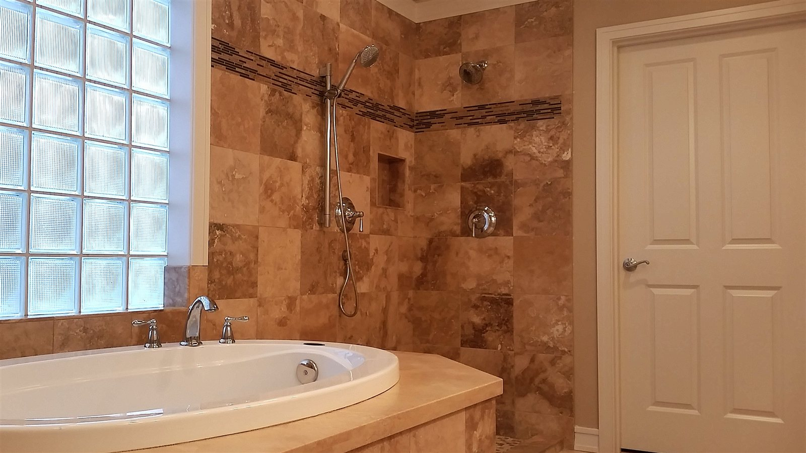
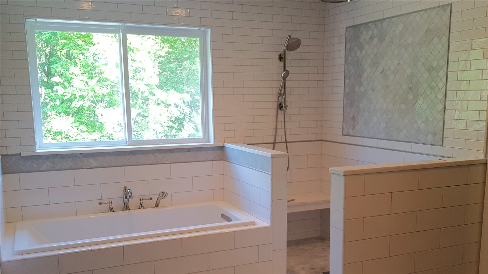

Shower Tile Installation in Hattiesburg, MS
A shower takes more water abuse than any other surface in the house. We build custom tile showers the right way — sloped pans, real waterproofing membrane, and niches sized for how you actually shower.
Custom Tile Showers Built to Last
A tile shower is a small, permanently wet enclosure — which means it has zero tolerance for shortcuts. A pan that's not sloped correctly pools water at the drain. A wall that's not waterproofed properly lets moisture behind the tile, where it damages framing long before you ever see a stain. We build every shower with that in mind, not just the finished look.
Whether you're replacing an old fiberglass insert with a full tile enclosure, converting a tub to a walk-in shower, or building a shower from scratch in new construction, our process starts the same way: a properly sloped mud pan or pre-formed base, a real waterproofing membrane system, and a layout plan that keeps grout lines and niches aligned before any tile gets set.
What We Install
- Sloped shower pans (mud-set or pre-formed) for correct drainage
- Waterproofing membrane on walls and pan, not just a vapor barrier
- Built-in niches and shelves sized during layout, not cut in afterward
- Bench seats and curb work where called for
- Glass-ready framing and clean edges for frameless enclosures
- Tub-to-shower conversions
Grout Lines and Long-Term Maintenance
Grout width and sealing matter more in a shower than almost anywhere else in the home. Narrower joints mean less grout surface exposed to constant water, but every joint still needs to be sealed (or set with an epoxy grout) to hold up over years of daily use in Hattiesburg's humid climate. We'll walk you through the grout type that makes sense for your tile and how your household actually uses the shower.

Shower Tile FAQ
How long does a shower tile installation take?
A full custom shower — including demo, pan build, waterproofing, and tile — typically takes 5–10 days depending on size and material lead times. Cure time for the mortar bed and waterproofing membrane is part of that timeline and shouldn't be rushed.
Can you convert my bathtub into a walk-in shower?
Yes, tub-to-shower conversions are one of the most common requests we get from Hattiesburg-area homeowners. It typically involves removing the tub, reworking the plumbing rough-in if needed, and building a new sloped pan before tiling.
What's the difference between a mud-set pan and a pre-formed base?
A mud-set (mortar bed) pan is built on-site and can be shaped to any dimension, which is useful for custom or irregular shower footprints. A pre-formed base is manufactured and installed faster, but the shower has to fit its standard sizes. We'll recommend the right option once we've seen your bathroom.
Other Tile Services
Ready to Build Your New Shower?
Get a fast, free quote from the crew doing the work.